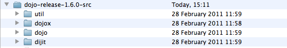

Dijit provides a series of controls which enhances basic HTML form controls with usability improvements, formatting and validation, as well as data-binding using the dojo.data API
Dijit provides a series of controls which enhances basic HTML form controls with usability improvements, formatting and validation, as well as data-binding using the dojo.data API
Throughout this series of tutorials we've been working with the "core" Dojo library — the functionality provided by dojo.js — and pulling in other modules as needed. Most have been under the "dojo" namespace: that is, code located in the dojo/ directory, and accessed as properties and methods from the 'dojo' global object. Lets crack open the box a bit further. If you've got a download or checkout of dojo, you'll see a directory structure like this.

It's unlikely that you've gotten this far into this series of tutorials without even being a little bit curious about the rest of Dojo, but just in case, let's back up and give them all a proper introduction.
First though, an aside about namespaces. In this tutorial, and in Dojo's documentation and the many other resources, we'll talk about JavaScript namespaces. Depending on your background, for you this could mean something very specific, or not much at all. JavaScript doesn't provide native namespaces in the XML sense, as everything has to co-exist in a shared global space. That being said, it has long been the convention for libraries and frameworks to restrict the number of global variables created, to minimize accidental name collisions. So it is with Dojo. Dojo creates a 'dojo' variable - an object with properties that correspond to modules and core methods. You can expect code hung off of the 'dojo' object to live in the dojo/ directory. This is what we mean by namespaces.
The subset of code from the dojo namespace that gets bundled up into dojo.js is often referred to as Dojo Base. The superset is known as Dojo Core. All code in Dojo Core is production-ready and stable. Code from Dojo's other namespaces frequently builds on - and is dependent on - Dojo Core. We've already seen some Dojo Core modules put to use - dojo.fx in the animation tutorial for example.
Other goodies in Core include helpers for working with numbers, strings, dates, cookies, strings, and drag-and-drop.
This example makes use of the Dojo base functions query, forEach, and place.
var headings = dojo.query('h2,h3');
dojo.forEach(headings, function(elm){
var topLink = dojo.create("a", {
href: "#top", innerHTML: "^top",
});
dojo.place(topLink, elm, "before");
});
The snippet queries the DOM using a CSS selector to indicate that we want both H2 and H3 elements, and use the each as the reference node to insert a newly created <a> element. There are dedicated tutorials for working with DOM functions and array helpers in this series to find out more.
To use functionality from Dojo Core, we first have to ensure the module is loaded, using dojo.require.
In this example we use dojo.date to compare two dates and get the result back in day units.
dojo.require("dojo.date");
function daysSince(fromDate){
if(!(fromDate instanceof Date)) {
fromDate = new Date(fromDate);
}
var now = new Date();
var days = dojo.date.difference(fromDate, now, "day")
return days;
}
There's a wealth of functionality in Dojo Core for common web and general-purpose programming tasks. This series of tutorials aims to introduce you to some of it, but it should not replace the broader familiarity you'll get from browsing the documentation and API.
The dijit directory and namespace is a sibling to Dojo Core. It is managed and run as a sub-project of the Dojo Toolkit, with its own owner, policies and guidelines.
The Dijit "guarantee" is that all code and UI widgets are consistent, stable, accessible and internationalized - including right-to-left support where appropriate.
Dijit is both a framework for defining user interface widgets, and a collection of ready-to-use controls and related functionality.
It enhances native controls like form fields, provides widgets for dynamic layouts and advanced widgets like trees and calendars.
Dijit provides a series of controls which enhances basic HTML form controls with usability improvements, formatting and validation, as well as data-binding using the dojo.data API
Dijit also has powerful tools for creating dynamic user interfaces that adapt to viewport size, and respond to resize and user interaction. It includes widgets for creating desktop-like application layouts and standard items like Tab and Accordion controls for making the best use of the space available.

You don't have to use Dijit when you are building interactivity, but the controls and patterns it comprises have grown out of a combined and cumulative experience of many years of building web applications, making it a great base to build on and with.
The dojox namespace is a collection of sub-projects that extend the toolkit into common and less common areas.
Each sub-project is a directory under dojox/, and provides its own README file which outlines the functionality and status of the project.
Some code is stable and production-ready, while others are not - check the individual project.
Here are some highlights in DojoX:
 A highly flexible and feature-rich Dijit-based data grid control
A highly flexible and feature-rich Dijit-based data grid control
 A cross-platform vector graphics API
A cross-platform vector graphics API
 Native charting built on dojox.gfx, with a broad selection of chart types, themes and features for visualizing data.
Native charting built on dojox.gfx, with a broad selection of chart types, themes and features for visualizing data.
And the less photogenic, but no less useful:
DojoX is a treasure trove of solutions for a wide range of problems, and many a rainy afternoon can be spent poking through its projects. You are encouraged to do just that - to spare yourself the forehead-slapping we've all experienced upon discovering in DojoX the very thing we've just spent a week working on.
The util/ directory contains scripts and resources for packaging, testing and documenting your project. Util is not a Dojo namespace,
and the contents are typically used outside the browser and your page.
There is no "right" way to create and deploy web applications, but Dojo tries to provide tooling to facilitate some of the important best practices that have emerged over the years.
Each of the utils is documented in its own right, but we'll give them a brief introduction here:
Dojo's package system allows the code in the toolkit to be modular, with the filesystem layout following the module structure. This means that for even a simple application, your browser would be issuing dozens of HTTP requests for the individual modules. This is an acceptable trade-off for developer convenience, but for production, you should always use the build tools to combine these individual module files down to one or more "layers".
The build system is a JavaScript application, which runs on Mozilla's Rhino. Read more about it the build system itself, and how to use it on your own code.
DOH is the test harness used by Dojo for its own unit tests. It includes an in-browser test runner and a non-browser, Rhino-driven test runner. DOH supports a simple set of assertions, and strong support for asynchronous tests, including a specialized implementation of Deferreds, meaning it can be used to test non-Dojo JavaScript as well.
For UI testing there is the DOH Robot, which is a Java applet-based web driver that can record and replay interactions with your pages. You can then take the recorded script and insert assertions as appropriate, making for a more complete test.
The Dojo API Doc System uses a custom inline comment syntax, which can be parsed out using the PHP-based tools in docscripts. This set of tools powers the official API Docs, and can be used against your own code to produce similar output.
The parts of the docs system are fully documented, including how to markup your code, how to operate the parser/docs-extractor and how to setup the API viewer to make the output browsable.
There is an extensive ecosystem of developers and resources working with and on the Dojo Toolkit. Some of the projects outside the official releases and individuals releasing open-source code associated with Dojo bear special mention:
dojox.collections.
The Dojo Toolkit is much more than a DOM and Ajax library. While it has feature and API overlaps with other libraries in this space, it is broader in its scope, and digs deeper in many areas to provide useful abstractions, widgets, and tools to help tackle the large and small, simple and complex, common and uncommon.
You won't learn it all at once - or perhaps ever - but as your requirements grow, Dojo grows with you.